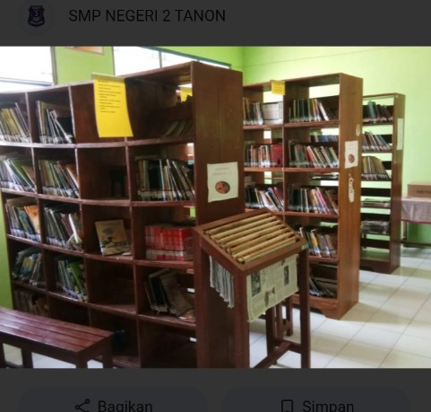
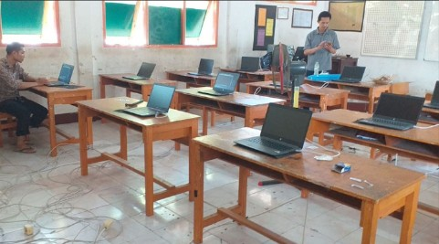
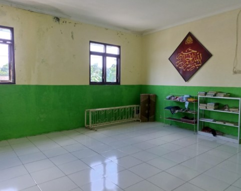
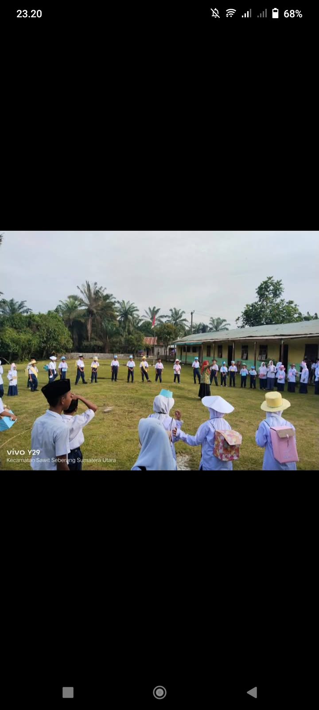

Sarana dan prasarana yang mendukung proses belajar, ibadah, serta pengembangan bakat siswa.
PERPUSTAKAAN
LAB KOMPUTER
MUSHOLA
LAPANGAN

Menyediakan berbagai koleksi buku pelajaran, agama, dan pengetahuan umum.

Laboratorium Komputer digunakan untuk mendukung proses pembelajaran TIK. Dilengkapi dengan perangkat komputer, jaringan internet, dan proyektor unutk kegiatan praktik siswa secara mandiri maupun berkelompok.

Mushola sekolah disediakan sebagai sarana ibadah bagi seluruh warga sekolah. Digunakan untuk melaksanakan sholat dzuhur berjama'ah, kegiatan keagamaan, serta pembinaan rohani siswa.

Lapangan sekolah digunakan untuk kegiatan olahraga, upacara bendera, dan berbagai aktivitas siswa diluar ruangan.